| > |
restart; with(LinearAlgebra): with(VectorCalculus): with(plots): |
Warning, the names &x, CrossProduct and DotProduct have been rebound
Warning, the assigned names <,> and <|> now have a global binding
Warning, these protected names have been redefined and unprotected: *, +, ., D, Vector, diff, int, limit, series
Warning, the name changecoords has been redefined
| > |
setoptions3d( axes=boxed, labels=["x","y","z"] ): |
In this worksheet we look at vector functions and their relationship to space curves.
Working with vector functions
Vector functions look much like constant vectors. For example, a helix could be given by
| > |
helix:= < cos(t), sin(t), t >; |
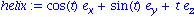
To plot a space curve corresponding to a vector function, use spacecurve. You have to convert a vector to a list here.
| > |
spacecurve( convert(helix,list), t=-4*Pi..4*Pi, color=red ); |
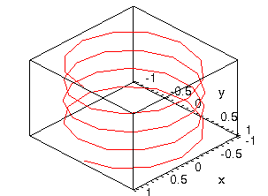
This looks terrible! Ask Maple to use more points along the curve.
| > |
spacecurve( convert(helix,list), t=-4*Pi..4*Pi, numpoints=300, color=red ); |
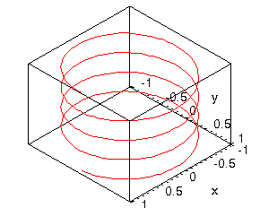
Another example:
| > |
curve:= < cos(t), sin(t), cos(t)^2 >; |
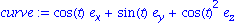
| > |
spacecurve( convert(curve,list), t=0..2*Pi , color=red ); |
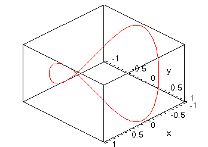
This curve happens to be the intersection of two cylinders, r=1 and z=x^2.
| > |
sc:= spacecurve( convert(curve,list), t=0..2*Pi , color=black, thickness=3 ): |
| > |
p1:= plot3d( [1,t,z], t=0..2*Pi, z=0..2, coords=cylindrical, style=wireframe, color=red ): |
| > |
p2:= plot3d( [x,y,x^2], x=-1..1, y=-1..1, style=wireframe, color=blue ): |
| > |
display( {sc,p1,p2}, axes=none ); |
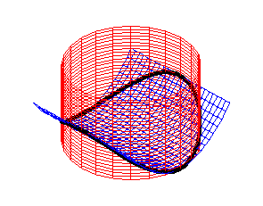
The "trefoil knot":
| > |
f:= 2+cos(3*t/2): spacecurve( [ cos(t)*f, sin(t)*f, sin(3*t/2) ],
t=0..6*Pi, numpoints=300, color=red ); |
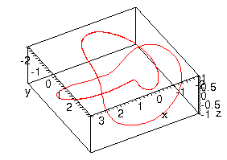
You have to rotate that one around in Maple to really get it.
Calculus of vector functions
The usual operations of limit, differentiation, and integration can all be done componentwise in the most obvious way.
| > |
r:= < a*cos(t), a*sin(t), b*t >; |
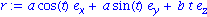
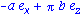
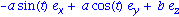
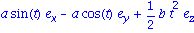
Remember that Maple leaves out the arbitrary constant of integration! (Here, that constant would be a vector.)
Here is the way to compute the unit tangent vector.
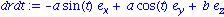
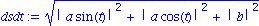
Recall that Maple assumes complex values, not real ones, for unknowns. Earlier we fixed this for Norm by using conjugate=false. Since we'll be making the assumption a lot, though, it's easiest to start by making the assumptions permanent. (Usually you should put these at the top of your worksheet, right after the restart.)
| > |
assume(t,real); assume(a>0); assume(b,real); |
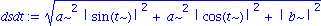
| > |
dsdt:= simplify( dsdt ); |
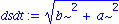
The tilde on the variables is to remind you that you made assumptions about them.
We continue on to find the unit tangent.
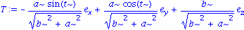
Maple has a TangentVector command, but it isn't the unit tangent.
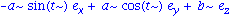
A picture:
| > |
r1:= subs({a=1,b=2},r); |
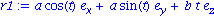
| > |
sc:= spacecurve( [cos(t),sin(t),2*t], t=0..2*Pi, color=red, numpoints=300 ): |
![pt := [0, 1, Pi]](images/SpaceCurves_19.gif)
| > |
vec:= arrow( pt,eval(T,{a=1,b=2,t=Pi/2}), color=blue ): |
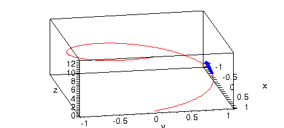
As another example, consider the smoothness of
| > |
r:= < cos(t)^3,sin(t)^3,sin(t)^3 >; |
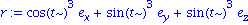
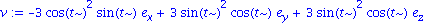
We look for points where the velocity is zero.
Warning, the protected name D has had its previous binding removed and has been assigned
| > |
solve( equate(v,<0,0,0>), t ); |
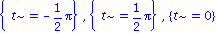
In fact, there are four points (and infinitely many t) at which this curve fails to be smooth.
| > |
spacecurve( convert(r,list), t=-Pi..Pi, color=red, numpoints=200, scaling=constrained ); |
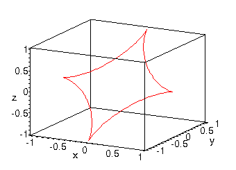
Arc length and curvature
Here is where Maple starts to pay real dividends. It's possible to compute arc length and curvature from the formulas, or with simple shortcuts.
| > |
r:= < cos(t), exp(1-t), sin(t) >; |
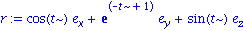
| > |
spacecurve( convert(r,list), t=0..2*Pi, color=red, numpoints=200 ); |
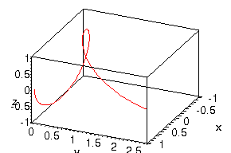
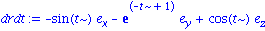
| > |
dsdt:= simplify( Norm(drdt,2) ); |
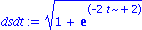
Arc length:
| > |
L:= int( dsdt, t=0..2*Pi ); |
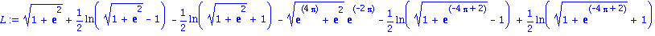
The formula is indecipherable, so get a numerical value.
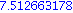
An alternative shortcut to all this:
| > |
ArcLength(r,t=0..2*Pi); |
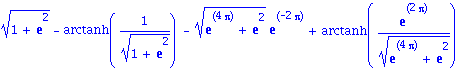
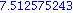
Curvature requires a second derivative.
| > |
num:= drdt &x diff(drdt,t); |
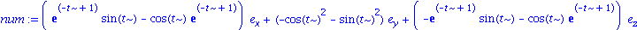
| > |
num:= simplify( Norm(num,2) ); |
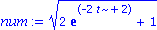
| > |
kappa:= simplify( num/dsdt^3 ); |
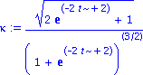
Only in a few cases does curvature produce a short formula.
Here is the shortcut.
| > |
simplify( Curvature(r,t) ) assuming t::real ; |
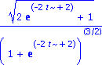
Finally, we have the unit tangent and normal. Remember that you have to do the normalizations yourself.
| > |
T:= TangentVector(r,t): T:= simplify(T/Norm(T,2)); |
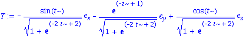
| > |
N:= PrincipalNormal(r,t): N:= simplify(N/Norm(N,2)); |
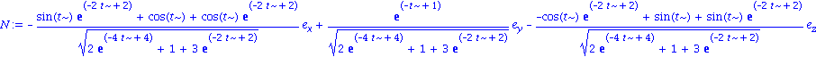
The expression for N is quite long! But we do know that N and T must be orthogonal:

Example: Curvature of a parabola
Where is the maximum curvature of the parabola 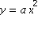
in the xy plane, and what is the curvature there? Assume a>0.
First we need a vector function form of the curve. The trick is to let the parameter just be x.
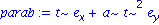
Now we follow the steps to find curvature. We will run into complex values of t unless we tell Maple otherwise.
| > |
kappa:= simplify( Curvature(parab,t) ); |
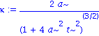
Now we have curvature as a function of t. The last step is to maximize it along the curve.
| > |
solve( diff(kappa,t)=0, t ); |

Curvature at the critical value t=0:

This is a maximum, because the limiting value is zero:
| > |
limit( kappa, t=infinity ); |

The parameter value t=0 is the point (0,0)--the vertex of the parabola. As you go farther out the parabola looks more and more like a straight line (zero curvature).
Velocity and acceleration
Example: Sideshow Bob
Sideshow Bob is to be shot out of a cannon with muzzle velocity 120 m/s. At what angle should the cannon be aimed if he is to land in the glass factory 500 m away?
This is a 2D problem. Once Bob is airborne, the only force on him is gravity. His mass cancels out of Newton's Law, leaving
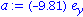
Since the origin is not specified, let it be the starting point.
The velocity at time zero is given from the unknown initial angle.
| > |
v0:= 120*<cos(theta),sin(theta)>; |
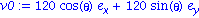
Integrate acceleration to get velocity. Note that v0 plays the role of constant of integration.
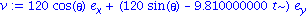
Integrate again to get position:
| > |
r:= Vector(r0) + int(v,t); |
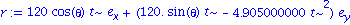
We have two unknowns: the time of flight and the initial angle. We also know the final position:
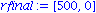
Use a vector equation to find the unknowns.
| > |
eqn:= student[equate]( eval(r,t=tfinal), rfinal ); |
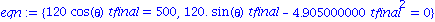
Solve the two conditions for the two unknowns.
| > |
solve( eqn, {theta,tfinal} ); |
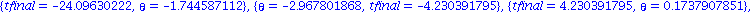
Solutions with negative times make no physical sense. So there are two solutions. In degrees:
| > |
evalf( convert(0.17379,degrees) ); |

| > |
evalf( convert(1.397,degrees) ); |
The larger angle would make for a spectacular impact! (Don't worry, Bob's a cartoon.)
Example: Proud Mary
The Mississippi River in Hannibal, MO runs due south between straight shores and is 400 m wide (not really!). The speed of the water is given in m/min by
| > |
water:= 10 - (x-200)^2/4000; |

where x is the distance from the west shore. The speed profile is
![[Plot]](images/SpaceCurves_58.gif)
A ferry starts from the west bank and heads due east at all times, at a speed of 50 m/min. How far south of the launch point does the ferry land?
Note that there are just 2 dimensions in this problem. The only thing we start with is total velocity, which is the vector sum of the boat's own motion and the water's.
| > |
v:= <50,0> + <0,-water>; |
^2-10]], [](images/SpaceCurves_59.gif)
This expression depends on the x position of the boat. Fortunately, it's obvious that x=50t, because the ferry heads east at constant speed 50. So
^2-10]], [](images/SpaceCurves_60.gif)
Since velocity is dr/dt, we can integrate to find the position vector r.
^3-10*t]], [](images/SpaceCurves_61.gif)
The boat reaches the east shore at t=8 min. What is the vertical coordinate at the start and finish?

| > |
eval(y,t=8) - eval(y,t=0); |

This is how many meters the ferry drifts (south) due to the current. A plot of the path:
| > |
plot( [r[1],r[2],t=0..8], 0..400,-80..0); |
![[Plot]](images/SpaceCurves_64.gif)